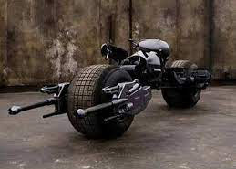
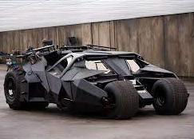
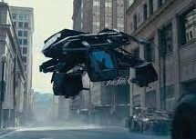

Batpod

The Batpod is intended as a kind of "escape pod" integrated into the Tumbler, it also
served
an auxiliary vehicle. Armed
with dual front-mounted cannons, machine guns and grappling hooks
Tumbler

Tumblers were a military prototype, off-road tank vehicles. Batman's black Tumbler
came
custom with an array of weapons
and gadgets.
The bat

The Bat was the name that was given to the aircraft that was operated by Batman in
The Dark Knight Rises.